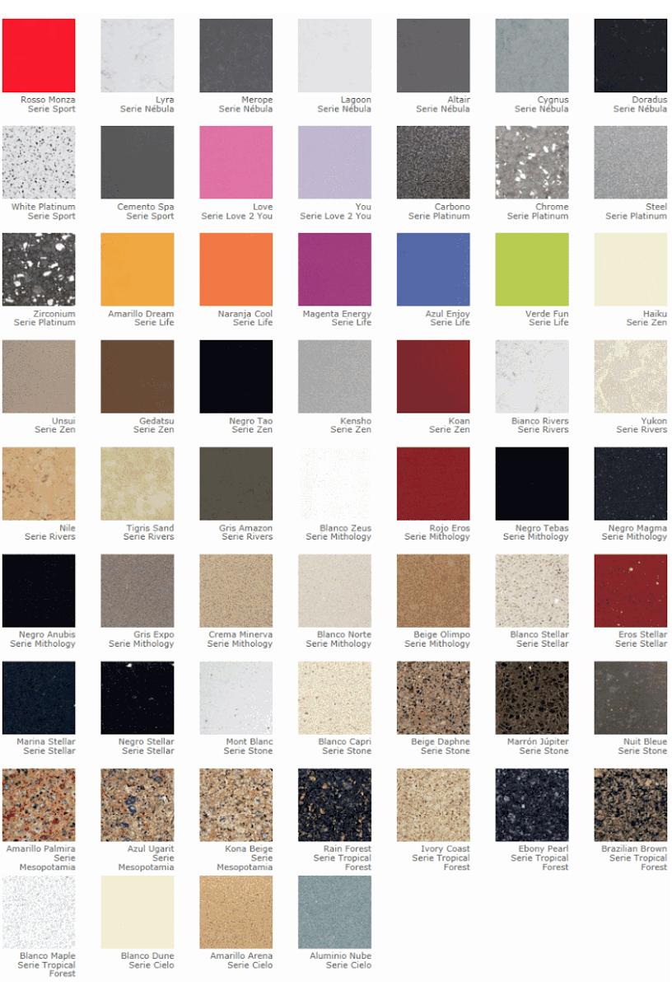

Materiales sintéticos
Tales como Silestone(TM), NeoLith(TM), Santa Margheritta(TM), son una base cuarzo natural molido
y creado a base de resinas Microban(TM), que unifica el material, para la decoración de cocinas y baños a
partir de un tratamiento que ofrece bellos y variados colores, extraordinarias texturas y unas altas prestaciones.
Su uso es casi como el de granito, pero condicionado por la menor durabilidad respecto en el largo plazo.
- Para cocinas: recomendado
- Para baños: recomendado
- Para revestimientos: recomendado
- Para exteriores: NO recomendado
